Part 1
Fun with Filters
In this part, we will build intuitions about 2D convolutions and filtering. We will begin by using the humble finite difference as our filter in the x and y directions.
Part 1.1
Convolutions from Scratch!
I used NumPy to implement 2D convolutions from scratch using four for loops and two. I also made sure to flip the kernel first so the operation is actually a convolution and not a cross-correlation.
def four_for_loops(input_img, kernal, padding):
k_height, k_width = kernal.shape
output = []
flipped = np.flip(kernal)
if padding == 'same':
pad = ((k_height // 2, (k_height - 1) // 2),(k_width // 2, (k_width - 1) // 2))
img = np.pad(np.asarray(input_img, dtype=np.float64), pad_width = pad, mode='constant', constant_values=0)
elif padding == 'full':
pad = ((k_height - 1, k_height - 1),(k_width - 1, k_width - 1))
img = np.pad(np.asarray(input_img, dtype=np.float64), pad_width = pad, mode='constant', constant_values=0)
else:
img = np.asarray(input_img, dtype=np.float64) # Valid Padding
for height_idx_img in range(0, len(img)-k_height+1):
collection_sums = []
for width_idx_img in range(0, len(img[0])-k_width+1):
temp_sum = 0
for height_idx_filter in range(0, k_height):
for width_idx_filter in range(0, k_width):
answer = flipped[height_idx_filter, width_idx_filter] * img[height_idx_img + height_idx_filter, width_idx_img + width_idx_filter]
temp_sum += answer
collection_sums.append(temp_sum)
output.append(collection_sums)
return np.array(output)def two_for_loops(input_img, kernal, padding):
k_height, k_width = kernal.shape
output = []
flipped = np.flip(kernal)
if padding == 'same':
pad = ((k_height // 2, (k_height - 1) // 2),(k_width // 2, (k_width - 1) // 2))
img = np.pad(np.asarray(input_img, dtype=np.float64), pad_width = pad, mode='constant', constant_values=0)
elif padding == 'full':
pad = ((k_height - 1, k_height - 1),(k_width - 1, k_width - 1))
img = np.pad(np.asarray(input_img, dtype=np.float64), pad_width = pad, mode='constant', constant_values=0)
else:
img = np.asarray(input_img, dtype=np.float64) # Valid Padding
for height_idx_img in range(0, len(img)-k_height+1):
collection_sums = []
for width_idx_img in range(0, len(img[0])-k_width+1):
# Element wise multiplication and then sum
patch = img[height_idx_img:height_idx_img+k_height, width_idx_img:width_idx_img+k_width]
temp_sum = np.sum(patch*flipped)
collection_sums.append(temp_sum)
output.append(collection_sums)
return np.array(output)Speed Comparison
Slowest
Four Loops
Takes the longest, since every kernel entry is multiplied and summed one at a time.
Faster
Two Loops
Faster, since we used vectorized operations in place of the two inner loops.
Fastest
SciPy
scipy.signal.convolve2d is the fastest since it is optimized.
I verified that both of my implementations matched scipy.signal.convolve2d over
random images and kernels in every padding mode.
Boundary Handling
The boundaries I covered were handled through same, full, and valid padding.
Same
The output has the same size as the input.
Full
Add k − 1 on each side.
Valid
No padding at all.
Results
Let's try convolving a picture of me in Hawaii with a 9×9 box filter and both finite difference operators, using my two-loop convolution. The box filter blurs the image, while the finite difference filters show us changes in the x direction and y direction for Dx and Dy respectively.
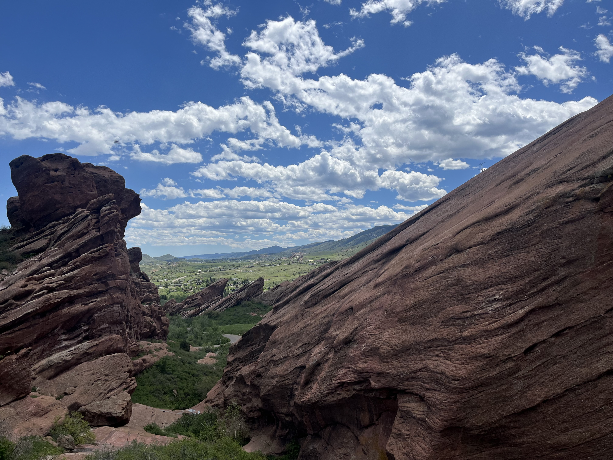
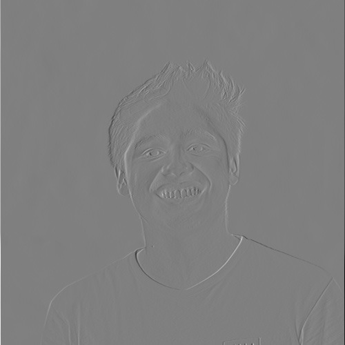
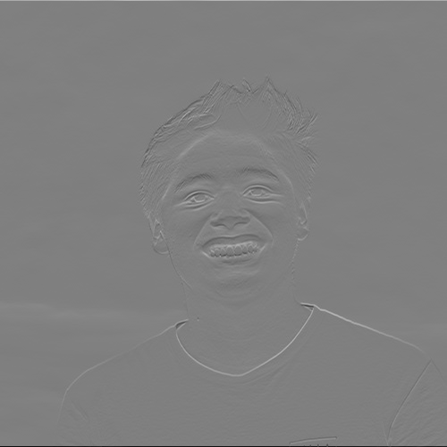
Part 1.2
Finite Difference Operator
We continue by showing the partial derivatives in x and y of the cameraman by once again convolving with the finite difference operators Dx and Dy.

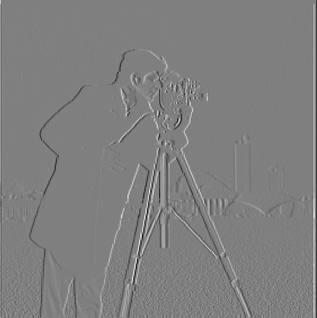


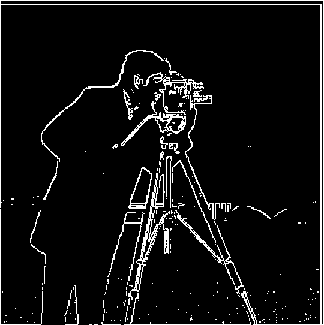
We attempt to convert the gradient magnitude image into an edge image by picking an appropriate threshold to suppress noise while still showing the real edges. I used a threshold of 65 on the gradient magnitude. I used 65 instead of 0.25 because I read the cameraman with pixel values from 0 to 255 rather than rescaling them to 0 to 1, so the gradient magnitude is measured in those same units, and 65 out of 255 is about 0.25. With this value I was able to get rid of most of the noise concentrated at the bottom of the picture while still keeping the true edges of the cameraman and the camera. However, details in the background were lost.
Part 1.3
Derivative of Gaussian (DoG) Filter
As mentioned in the project spec, the results with just the difference operator were rather
noisy. Luckily, we have a smoothing operator handy: the Gaussian filter G. We first create a
blurred version of the original image by convolving with a Gaussian filter and then repeat the
procedure in the previous part, but now on this blurred image. Below I show the partial
derivatives, gradient magnitude image, and binarized gradient magnitude image. I used a
3×3 Gaussian kernel with σ = 0.6 to create the
Gaussian filter, built with cv2.getGaussianKernel and an outer product with
its transpose.
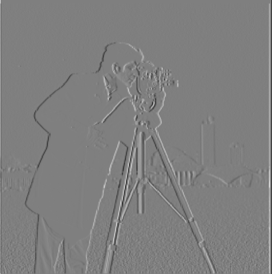
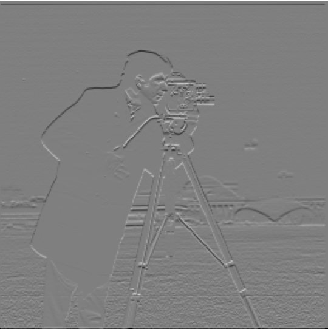
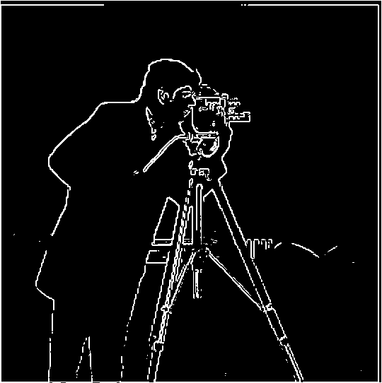
There is a notable difference in the final two images. The difference was caused by applying a Gaussian filter that reduced the noise, essentially erasing the very high frequencies. For example, there are fewer white dots in the binary edge image despite using the same threshold.
Derivative of Gaussian Filters
Instead of using two convolutions, we can get the result above using only one convolution. We do this by convolving the Gaussian with Dx and Dy to get the derivative of Gaussian filters, which are shown below next to the Gaussian itself.
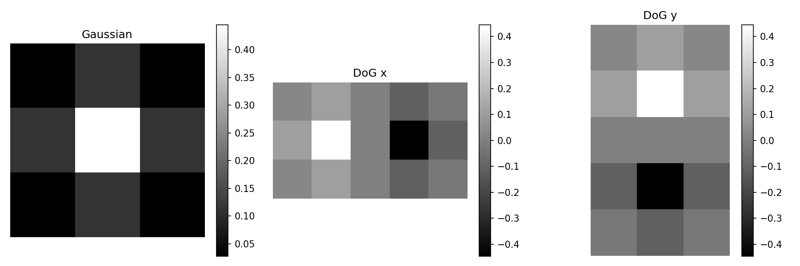
Convolving the original image once with each DoG filter gives the results below.
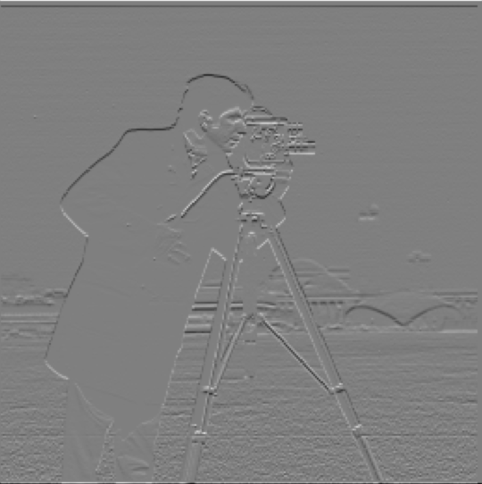
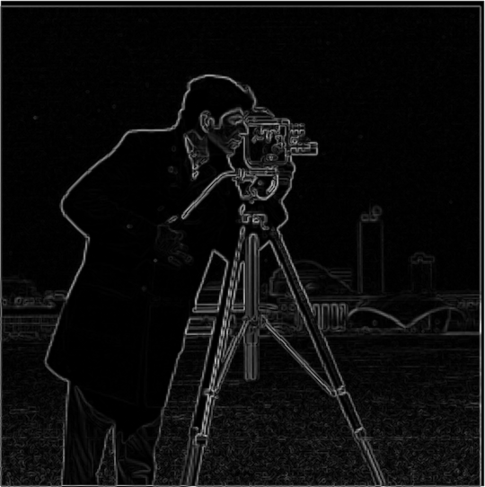
These results should come out to be the same since convolutions are associative.
To verify, I compared these results with blurring and then differentiating. Away from the border they agree up to floating-point error, and the binarized edge images are identical. The outer 2 pixels differ because the blur pads the image symmetrically while the difference operators pad with zeros. The DoG gradient magnitude image only looks brighter because each magnitude image is rescaled by its own maximum, and that maximum falls on a border pixel where the two approaches differ.
Part 2
Fun with Frequencies!
Sharpening, hybrid images, and multiresolution blending all come from separating an image into its low frequencies and its high frequencies. I will explore all three in this section.
Part 2.1
Image “Sharpening”
Deriving the Unsharp Mask
A blur filter is a low-pass filter. When we convolve an image f with a Gaussian g, what we get is a blurred image. This means we keep the image’s low frequencies and remove the high ones. Now, if we subtract the blurred image from the original, what is left is only the high frequencies, f − f ∗ g, which hold edges and other fine detail. To sharpen an image, I add those high frequencies back in, scaled by α. Not only is convolution associative, but it is also linear. This collapses the whole process into a single convolution with one filter, the unsharp mask filter, where e is the unit impulse (the identity kernel).
I used a 5×5 Gaussian with σ = 0.8 and α = 4, and filtered each color channel separately.
Blurred, High Frequencies, and Sharpened
Below are examples of me using the unsharp mask filter on the Taj Mahal, my sister and me on a trip to Mexico, my mom, my sister, and me cooking in Peru, and a random house. Note: High frequencies can be negative, so they are shown shifted up by 128 so that zero is mid-gray.
Original
Blurred
High Frequencies
Sharpened (α = 4)
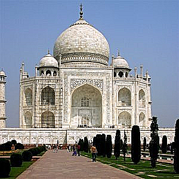
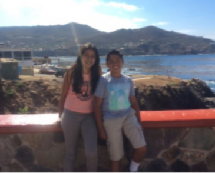
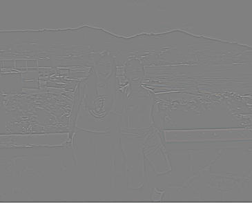
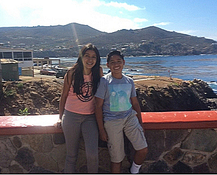
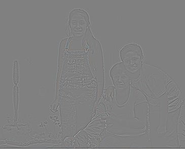
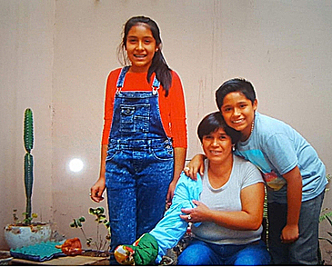
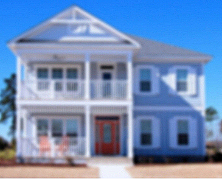
Varying the Sharpening Amount
Increasing α adds more of the high frequencies back. Small values give a subtle boost, while large values overshoot at the edges and start to look grainy and over-processed.
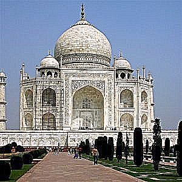
Evaluation: Blur, Then Sharpen
To evaluate sharpening, I took a sharp image of my family eating Peruvian food, blurred it with the same Gaussian (5×5 Gaussian with σ = 0.8), and then sharpened the blurred result with α = 4.
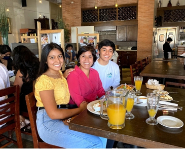
The re-sharpened image is much crisper than the blurred one. I think the most apparent change is on the faces of my sister, my mom, and me. However, it does not fully recover the original image. Blurring is a low pass filter, so it removed some of the finer details that cannot be recovered, since sharpening only amplifies the high frequencies that survived the blur.
Part 2.2
Hybrid Images
A hybrid image combines the low frequencies of one image with the high frequencies of another. Up close the high frequencies dominate and you should see mainly one image, but from far away only the low frequencies are visible, so you see the other image. In order to get the high-pass frequencies, I get one image and subtract the Gaussian blur of that image. To get the low-pass frequencies of the other image, all I need to do is apply a Gaussian filter. Lastly, to end up with the hybrid image, I just add the two.
The two σ values set the cutoff frequencies. A larger σ2 removes more detail from the low-pass image, and a smaller σ1 keeps only the finest edges of the high-pass image.
Toothless + Stitch: Full Process
I LOVE TOOTHLESS AND STITCH, so this is the hybrid image I decided to show the full process for. You should be able to see Stitch up close and Toothless far away.
Original Images
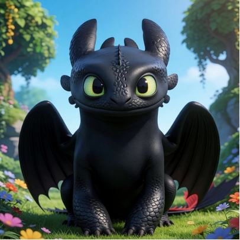
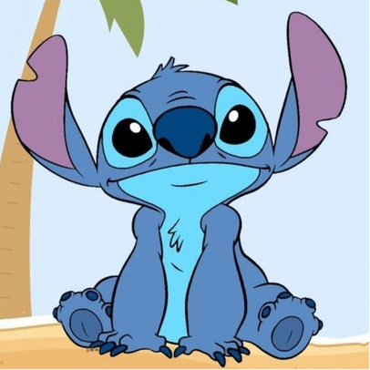
Aligned Images
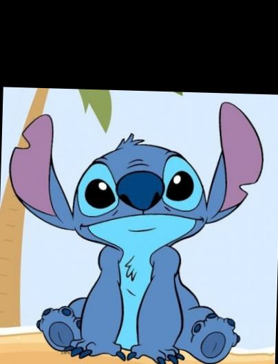
Fourier Transforms
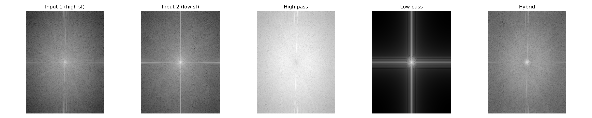
The low-pass result keeps only the bright region around the center of the spectrum, which holds the low frequencies. The high-pass result suppresses the center and keeps everything else. The hybrid’s spectrum contains both.
Filtered Results
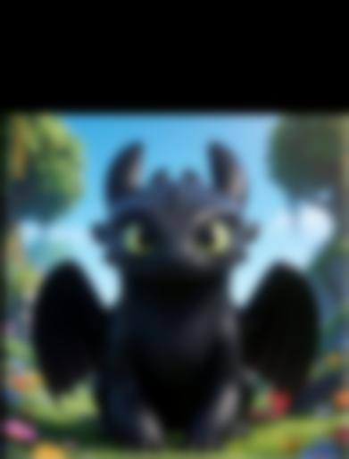
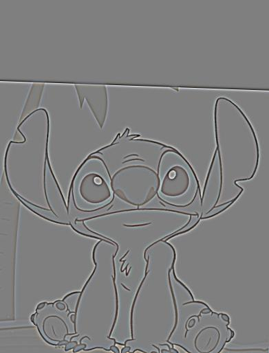
Note: The high-pass image can be negative, so it is shown shifted by 0.5 so that zero is mid-gray.
Cutoff Frequency Choice
σ1 = 2 – high-pass Stitch image
σ2 = 6 – low-pass Toothless image
I chose a relatively small σ1 because I wanted to keep only Stitch’s fine lines, and I chose σ2 to put a stronger blur on Toothless, so I can focus on Stitch up close. I tuned the sigmas based on my results and not on Nutmeg and Derek, which is why I use different sigmas for them.
Final Hybrid
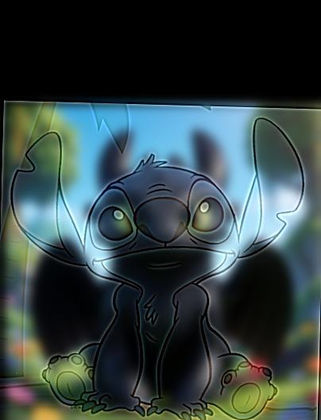
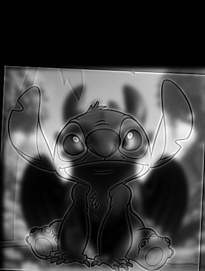
Derek + Nutmeg
σ1 = 10 – high-pass Nutmeg image
σ2 = 15 – low-pass Derek image
You should be able to see Nutmeg up close and see Derek far away.


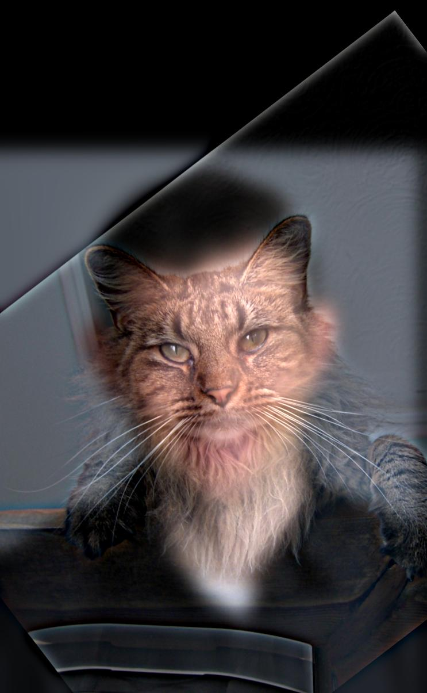
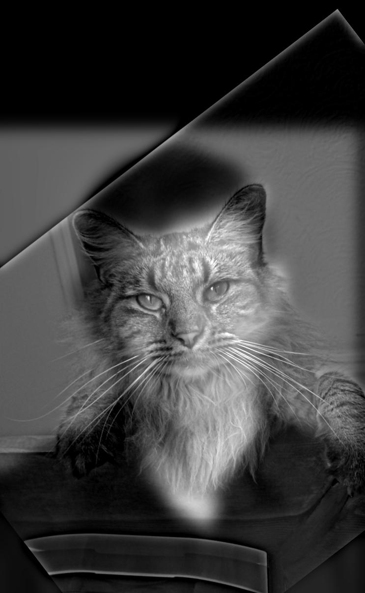
Soup + Empty Plate
σ1 = 2 – high-pass bowl of soup image (that I made :P)
σ2 = 6 – low-pass empty plate image
You should be able to see soup up close and see an empty plate far away.
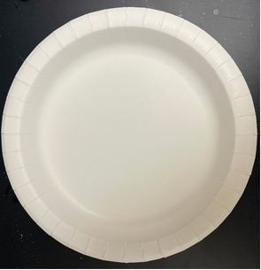
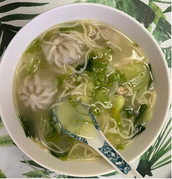
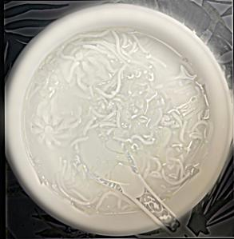
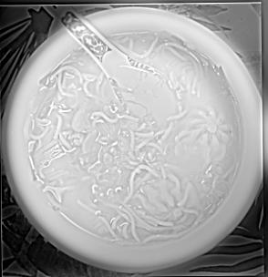
Part 2.3
Gaussian and Laplacian Stacks
A Gaussian stack repeatedly blurs the image without downsampling, so every level stays the same size. Each level blurs the previous one with σ = 2 · 2i − 1. The Laplacian stack takes the difference between neighboring Gaussian levels, so each Laplacian level holds one band of frequencies, and its last level is the blurriest Gaussian level. Adding up every Laplacian level gives back the first image in the Gaussian stack.
Below are the 5-level stacks for both the ‘apple’ and ‘orange’ that will later become the oraple (WOAH). In each, the top row is the Gaussian stack and the bottom row is the Laplacian stack, with the Laplacian levels normalized for display.
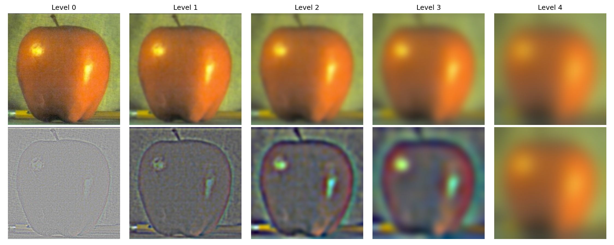
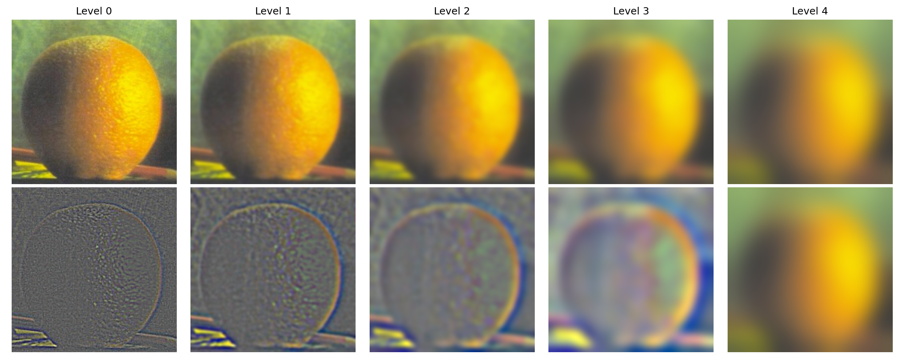
Recreating Figure 3.42
Applying the stacks to the oraple (created in the next section) with the vertical mask recreates Figure 3.42. It shows the masked Laplacian levels of the apple, the orange, and the blend at levels 0, 2, and 4, with each column’s levels summed in the last row. This figure uses the 7-level stacks from Part 2.4, and the Laplacian levels are normalized for display.
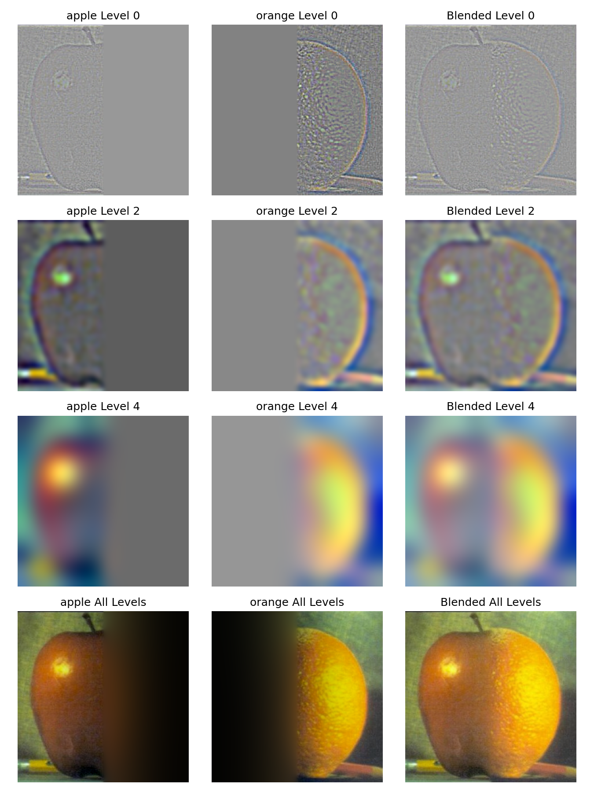
Part 2.4
Multiresolution Blending (a.k.a. the oraple!)
How do we create the oraple?!?!?! To blend two images, you can build a Laplacian stack for each image and a Gaussian stack for the mask. At each level, the mask’s Gaussian level weights the two Laplacian levels, and summing the blended levels gives the final image. Since the mask is blurred more at coarser levels, low frequencies blend over a wide transition while fine details switch over sharply, which hides the seam.
Results
The Oraple · Vertical Mask


Starry Ocean · Horizontal Mask
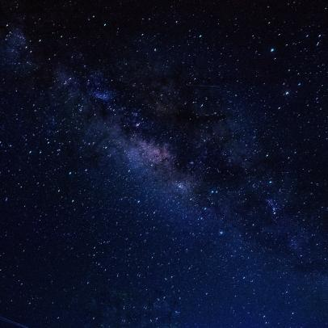
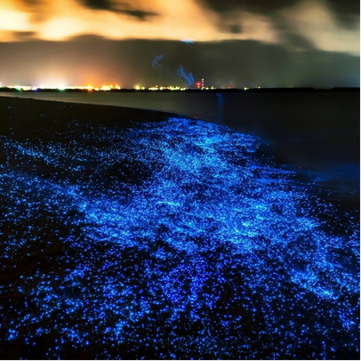
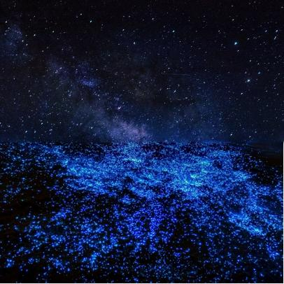
Water Bucket Challenge · Irregular Mask
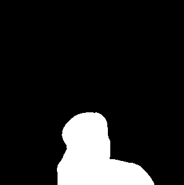
Process: Water Bucket Challenge
For my favorite result, here is the Laplacian stack of each masked input and of the blend at levels 0, 2, and 4, with the sum of all levels in the last row. I used a 7-level stack and a mask of the person that is first blurred with σ = 1. COLD! SHOCKED! BRRRR!
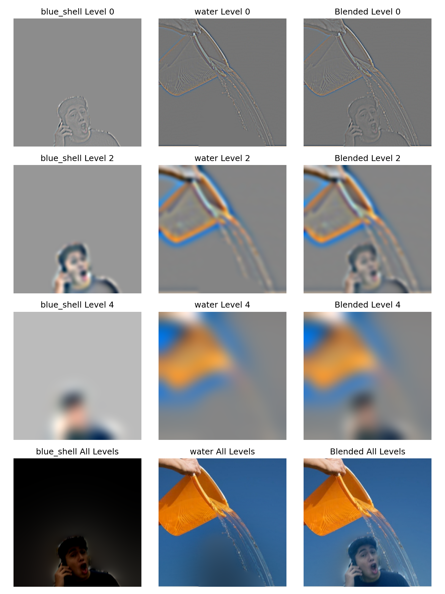
Takeaway
The most important thing that I learned doing this project was the idea of viewing images as frequencies. An image is a combination of low and high frequencies, and using filters we can break them apart. I feel this will be really helpful and useful to know for the upcoming ML sections.